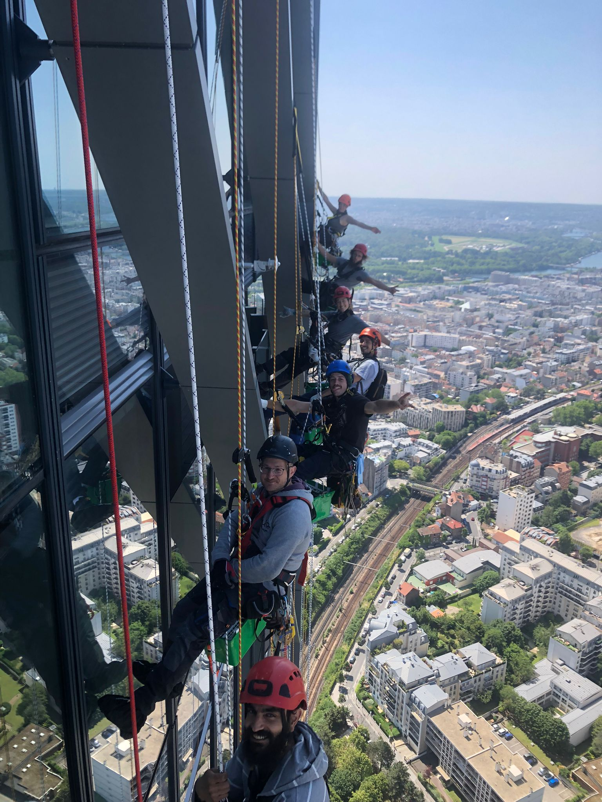

Qui sommes-nous ?

Cap Cordes est née d'une volonté simple : allier l'agilité des travaux d'accès difficile à la rigueur d'une gestion de projet haut de gamme. Basés à Trilport, nous intervenons dans tout le bassin parisien pour répondre aux défis architecturaux les plus complexes.
Spécialistes de la corde, nous ne sommes pas uniquement des exécutants, mais de véritables partenaires techniques pour les syndics, les architectes et les propriétaires de bâtiments historiques.
Expertise Technique
Chaque membre de notre équipe est un professionnel certifié, formé aux spécificités du bâti ancien parisien et aux normes de sécurité les plus strictes.
Réactivité
L'absence d'échafaudage nous permet de mobiliser nos équipes en un temps record pour des mises en sécurité ou des recherches d'infiltration urgentes.
Transparence
De la prise de contact au rapport de préconisation final, nous privilégions une communication claire et des devis détaillés sans surprise.
Engagement Patrimoine
Nous travaillons dans le respect des matériaux nobles. Notre but est de pérenniser la pierre et les structures de vos immeubles.
Prêt à travailler avec nous ?
Contactez l'atelier